Decision trees are among the most powerful Machine Learning tools available today and are used in a wide variety of real-world applications from Ad click predictions at Facebook¹ to Ranking of Airbnb experiences. Yet they are intuitive, easy to interpret — and easy to implement. In this article we’ll train our own decision tree classifier in just 66 lines of Python code.
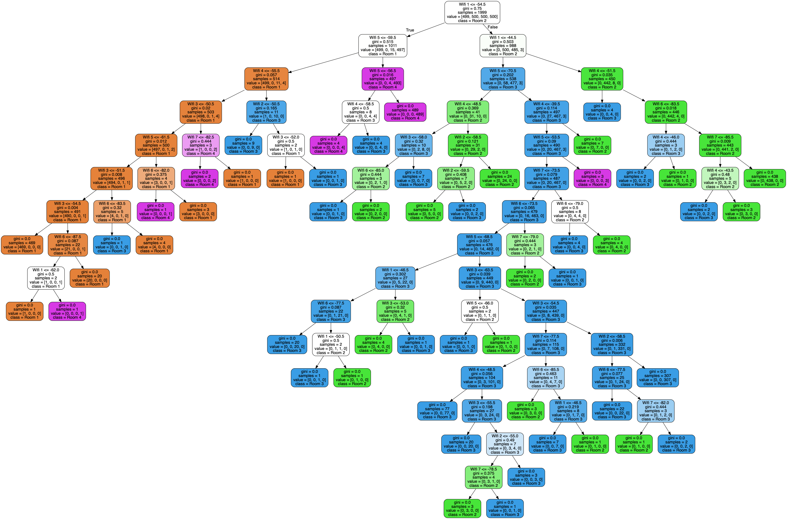
Let’s build this!
What is a decision tree?
Decision trees can be used for regression (continuous real-valued output,
e.g. predicting the price of a house) or classification (categorical output,
e.g. predicting email spam vs. no spam), but here we will focus on classification. A decision tree classifier is a binary tree where predictions are made by traversing the tree from root to leaf — at each node, we go left if a feature is less than a threshold, right otherwise. Finally, each leaf is associated with a class, which is the output of the predictor.
For example consider this Wireless Indoor Localization Dataset.² It gives 7 features representing the strength of 7 Wi-Fi signals perceived by a phone in an apartment, along with the indoor location of the phone which can be Room 1, 2, 3 or 4.
+-------+-------+-------+-------+-------+-------+-------+------+
| Wifi1 | Wifi2 | Wifi3 | Wifi4 | Wifi5 | Wifi6 | Wifi7 | Room |
+-------+-------+-------+-------+-------+-------+-------+------+
| -64 | -55 | -63 | -66 | -76 | -88 | -83 | 1 |
| -49 | -52 | -57 | -54 | -59 | -85 | -88 | 3 |
| -36 | -60 | -53 | -36 | -63 | -70 | -77 | 2 |
| -61 | -56 | -55 | -63 | -52 | -84 | -87 | 4 |
| -36 | -61 | -57 | -27 | -71 | -73 | -70 | 2 |
...
The goal is to predict which room the phone is located in based on the strength of Wi-Fi signals 1 to 7. A trained decision tree of depth 2 could look like this:
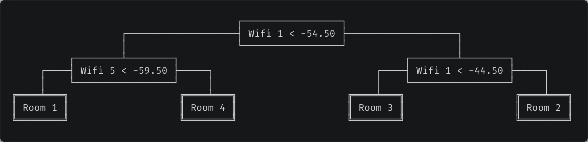
Trained decision tree. Predictions are performed by traversing the tree from root to leaf and going left when the condition is true. For example, if Wifi 1 strength is -60 and Wifi 5 strength is -50, we would predict the phone is located in room 4.
Gini impurity
Before we dive into the code, let’s define the metric used throughout the algorithm. Decision trees use the concept of Gini impurity to describe how homogeneous or “pure” a node is. A node is pure (G = 0) if all its samples belong to the same class, while a node with many samples from many different classes will have a Gini closer to 1.
More formally the Gini impurity of n training samples split across k classes is defined as
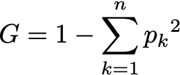
where p[k] is the fraction of samples belonging to class k.
For example if a node contains five samples, with two of class Room 1, two of class Room 2, one of class Room 3 and none of class Room 4, then
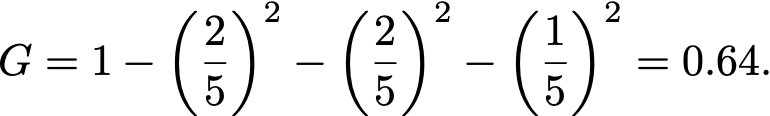
CART algorithm
The training algorithm is a recursive algorithm called CART, short for Classification And Regression Trees.³ Each node is split so that the Gini impurity of the children (more specifically the average of the Gini of the children weighted by their size) is minimized.
The recursion stops when the maximum depth, a hyperparameter, is reached, or when no split can lead to two children purer than their parent. Other hyperparameters can control this stopping criterion (crucial in practice to avoid overfitting), but we won’t cover them here.
For example, if X = [[1.5], [1.7], [2.3], [2.7], [2.7]] and y = [1, 1, 2, 2, 3] then an optimal split is feature_0 < 2, because as computed above the Gini of the parent is 0.64, and the Gini of the children after the split is
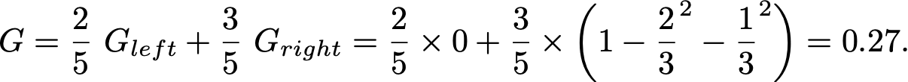
You can convince yourself that no other split yields a lower Gini.
Finding the optimal feature and threshold
The key to the CART algorithm is finding the optimal feature and threshold such that the Gini impurity is minimized. To do so, we try all possible splits and compute the resulting Gini impurities.
But how can we try all possible thresholds for a continuous values? There is a simple trick — sort the values for a given feature, and consider all midpoints between two adjacent values. Sorting is costly, but it is needed anyway as we will see shortly.
Now, how might we compute the Gini of all possible splits?
The first solution is to actually perform each split and compute the resulting Gini. Unfortunately this is slow, since we would need to look at all the samples to partition them into left and right. More precisely, it would be n splits with O(n) operations for each split, making the overall operation O(n²).
A faster approach is to 1. iterate through the sorted feature values as possible thresholds, 2. keep track of the number of samples per class on the left and on the right, and 3. increment/decrement them by 1 after each threshold. From them we can easily compute Gini in constant time.
Indeed if m is the size of the node and m[k] the number of samples of class k in the node, then
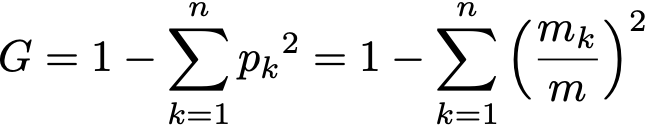
and since after seeing the i-th threshold there are i elements on the left and m–i on the right,
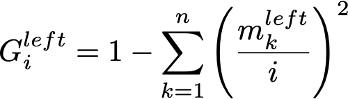
and
The resulting Gini is a simple weighted average:
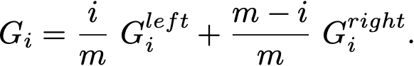
Here is the entire _best_split method.
import numpy as np
class DecisionTreeClassifier:
def __init__(self, max_depth=None):
self.max_depth = max_depth
def _best_split(self, X, y):
"""Find the best split for a node.
"Best" means that the average impurity of the two children, weighted by their
population, is the smallest possible. Additionally it must be less than the
impurity of the current node.
To find the best split, we loop through all the features, and consider all the
midpoints between adjacent training samples as possible thresholds. We compute
the Gini impurity of the split generated by that particular feature/threshold
pair, and return the pair with smallest impurity.
Returns:
best_idx: Index of the feature for best split, or None if no split is found.
best_thr: Threshold to use for the split, or None if no split is found.
"""
# Need at least two elements to split a node.
m = y.size
if m <= 1:
return None, None
# Count of each class in the current node.
num_parent = [np.sum(y == c) for c in range(self.n_classes_)]
# Gini of current node.
best_gini = 1.0 - sum((n / m) ** 2 for n in num_parent)
best_idx, best_thr = None, None
# Loop through all features.
for idx in range(self.n_features_):
# Sort data along selected feature.
thresholds, classes = zip(*sorted(zip(X[:, idx], y)))
# We could actually split the node according to each feature/threshold pair
# and count the resulting population for each class in the children, but
# instead we compute them in an iterative fashion, making this for loop
# linear rather than quadratic.
num_left = [0] * self.n_classes_
num_right = num_parent.copy()
for i in range(1, m): # possible split positions
c = classes[i - 1]
num_left[c] += 1
num_right[c] -= 1
gini_left = 1.0 - sum(
(num_left[x] / i) ** 2 for x in range(self.n_classes_)
)
gini_right = 1.0 - sum(
(num_right[x] / (m - i)) ** 2 for x in range(self.n_classes_)
)
# The Gini impurity of a split is the weighted average of the Gini
# impurity of the children.
gini = (i * gini_left + (m - i) * gini_right) / m
# The following condition is to make sure we don't try to split two
# points with identical values for that feature, as it is impossible
# (both have to end up on the same side of a split).
if thresholds[i] == thresholds[i - 1]:
continue
if gini < best_gini:
best_gini = gini
best_idx = idx
best_thr = (thresholds[i] + thresholds[i - 1]) / 2 # midpoint
return best_idx, best_thr
The condition on line 61 is the last subtlety. By looping through all feature values, we allow splits on samples that have the same value. In reality we can only split them if they have a distinct value for that feature, hence the additional check.
Recursion
The hard part is done! Now all we have to do is split each node recursively until the maximum depth is reached.
But first let’s define a Node class:
class Node:
def __init__(self, gini, num_samples, num_samples_per_class, predicted_class):
self.gini = gini
self.num_samples = num_samples
self.num_samples_per_class = num_samples_per_class
self.predicted_class = predicted_class
self.feature_index = 0
self.threshold = 0
self.left = None
self.right = None
Fitting a decision tree to data X and targets y is done via the fit() method which calls a recursive method _grow_tree():
class DecisionTreeClassifier:
def fit(self, X, y):
"""Build decision tree classifier."""
self.n_classes_ = len(set(y)) # classes are assumed to go from 0 to n-1
self.n_features_ = X.shape[1]
self.tree_ = self._grow_tree(X, y)
def _grow_tree(self, X, y, depth=0):
"""Build a decision tree by recursively finding the best split."""
# Population for each class in current node. The predicted class is the one with
# largest population.
num_samples_per_class = [np.sum(y == i) for i in range(self.n_classes_)]
predicted_class = np.argmax(num_samples_per_class)
node = Node(
gini=self._gini(y),
num_samples=y.size,
num_samples_per_class=num_samples_per_class,
predicted_class=predicted_class,
)
# Split recursively until maximum depth is reached.
if depth < self.max_depth:
idx, thr = self._best_split(X, y)
if idx is not None:
indices_left = X[:, idx] < thr
X_left, y_left = X[indices_left], y[indices_left]
X_right, y_right = X[~indices_left], y[~indices_left]
node.feature_index = idx
node.threshold = thr
node.left = self._grow_tree(X_left, y_left, depth + 1)
node.right = self._grow_tree(X_right, y_right, depth + 1)
return node
Predictions
We have seen how to fit a decision tree, now how can we use it to predict classes for unseen data? It could not be easier — go left if the feature value is below the threshold, go right otherwise.
class DecisionTreeClassifier:
def predict(self, X):
return [self._predict(inputs) for inputs in X]
def _predict(self, inputs):
"""Predict class for a single sample."""
node = self.tree_
while node.left:
if inputs[node.feature_index] < node.threshold:
node = node.left
else:
node = node.right
return node.predicted_class
Train the model
Our DecisionTreeClassifier is ready! Let’s train a model on the Wireless Indoor Localization Dataset:
import pandas as pd
# Load data.
df = pd.read_csv("wifi_localization.txt", delimiter="\t")
data = df.to_numpy()
X = data[:, :-1] # all columns but the last
y = data[:, -1] - 1 # expected to be from 0 to n_classes - 1
# Fit data.
clf = DecisionTreeClassifier(max_depth=2)
clf.fit(X, y)
# Visualize.
clf.debug(
features_names=["Wifi {}".format(i) for i in range(1, 8)],
target_names=["Room {}".format(i) for i in range(1, 5)],
)
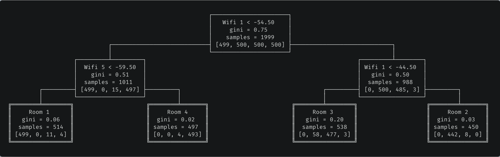
Our trained decision tree. For the ASCII visualization — not in the scope of this article — check out the full code for the Node class.
As a sanity check, here’s the output of the Scikit-Learn implementation:
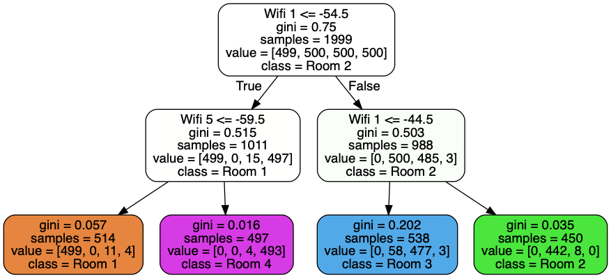
Complexity
It’s easy to see that prediction is in O(log m), where m is the depth of the tree.
But how about training? The Master Theorem will be helpful here. The time complexity of fitting a tree on a dataset with n samples can be expressed with the following recurrence relation:
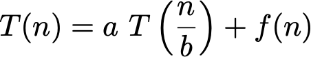
where, assuming the best case where left and right children have the same size, a = 2 and b = 2; and f(n) is the complexity of splitting the node in two children, in other words the complexity of _best_split. The first for loop iterates on the features, and for each iteration there is a sort of complexity O(n log n) and another for loop in O(n). Therefore f(n) is O(k n log n) where k is the number of features.
With those assumptions, the Master Theorem tells us that the total time complexity is
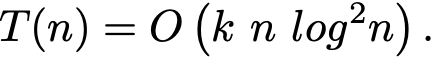
This is not too far from but still worse than the complexity of the Scikit-Learn implementation, apparently in O(k n log n).